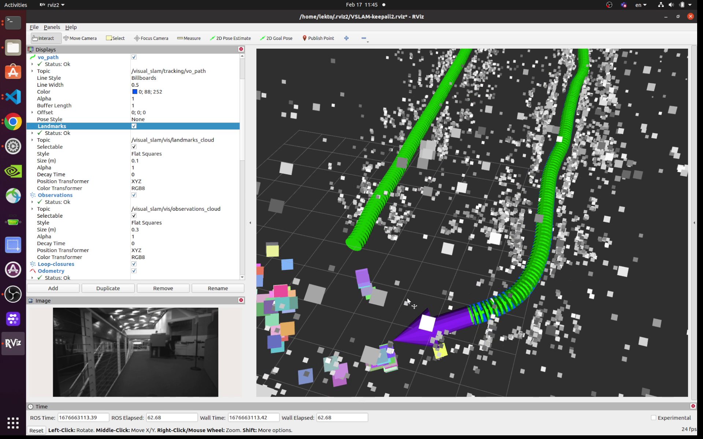

Attention
This tutorial is deprecated.
Please reference the official Isaac ROS Docs Site to get the latest information and the quickstart guide on isaac_ros_visual_slam.
Quickstart
Hardware you need
- Jetson Orin Nano Developer Kit
- microSD card (>=64GB)
- Intel RealSense D435i or D455 (See the list of compatible camera)
- (Optional) USB-C powerbank (example1, example2)
- (Optional) USB-C to DC jack cable (example1)
Overview
graph TD
subgraph sub1 ["Jetson"]
style sub1 fill:#76B900,opacity:.25,stroke:#006666,stroke-width:3px
B[2. RUN Visual SLAM]
D[3. Visualization on Jetson]
end
subgraph sub2 ["PC"]
style sub2 fill:#77216f,opacity:.25,stroke:#dd4814,stroke-width:3px
A[1. Flash SD card]
C[3. Visualization on PC]
end
A ==> B
B ==> C
B .-> D1. Flash SD card
Download the custom SD card image for Jetson Orin Nano on your PC from SD card image page.
Use Balena Etcher to flash the downloaded image to microSD card on your PC (Windows, Mac, Linux).
For the details of SD card flashing and powering on Jetson, refer to the Jetson Orin Nano Developer Kit Getting Started Guide .
2. Run
Info
This section is based on the official tutorial, " Tutorial for Visual SLAM using a RealSense camera with integrated IMU".
2.1 [ Terminal 1 ] Start the pre-built Docker container
Make sure you have your RealSense camera attached to Jetson, and then start the Isaac ROS container.
isaac_ros_container
2.2 [ Terminal 1 ] Inside the container, (build and) source the workspace:
source install/setup.bash
If you have made any changes to ROS 2 packages in your workspace, rebuild the workspace.
cd /workspaces/isaac_ros-dev && \ colcon build --symlink-install && \ source install/setup.bash
2.3 [ Terminal 1 ] Run the launch file, which launches the example and wait for 5 seconds:
ros2 launch isaac_ros_visual_slam isaac_ros_visual_slam_realsense.launch.py
2.4 [ Terminal 2 ] Attach a second terminal to check the operation.
Attach another terminal to the running container for issuing other ROS 2 commands.
isaac_ros_container
Inside the container, first check if you can see all the ROS2 topics expected.
source install/setup.bash
ros2 topic list
2.5 [ Terminal 2 ] Record topics into a rosbag file
When Jetson is running entirely on a SD card (ie. without NVMe SSD), the disk access speed is limited, so use RAM disk.
cd /tmp/ramdisk
Note the RAM disk on the custom SD card is setup to be 2GB.
Start recording ROS 2 messages into a rosbag file and move around with your camera for up to about 1 minute.
export ROSBAG_NAME=courtyard-d435i
ros2 bag record -o ${ROSBAG_NAME} --include-hidden-topics \
/camera/infra1/camera_info /camera/infra1/image_rect_raw /camera/infra1/metadata \
/tf_static /tf \
/visual_slam/status /visual_slam/tracking/odometry \
/visual_slam/tracking/vo_pose /visual_slam/tracking/vo_pose_covariance \
/visual_slam/vis/landmarks_cloud /visual_slam/vis/loop_closure_cloud /visual_slam/vis/observations_cloud
Press Ctrl+C to stop the recording.
Remember to stop rosbag recording before it runs out of RAM disk space.
2.6 [ Terminal 2 ] Copy Rosbag file
Copy the rosbag file to other PC, in case you use your PC's ROS 2 environment to examine the recording.
export IP_PC=192.168.1.100
scp -r ${ROSBAG_NAME} ${PC_USER}@${IP_PC}:/home/${PC_USER}/Downloads/
3. Visualization
Info
This section is based on the official tutorial, " Tutorial for Visual SLAM using a RealSense camera with integrated IMU".
If you have a PC with ROS 2 environment already set up, you can use the PC to examine the rosbag file recorded on your Jetson.
Alternatively, if you have a display monitor attached to Jetson, you can perform this visualization on your Jetson.
Either way, the visualization is done offline, after the Isaac ROS Visual SLAM execution, using the recorded rosbag file.
3.1 [ Terminal 1 ] Pre-setup
We assume the ROS 2 Humble environment is set up on your PC.
Otherwise, follow the ROS 2 official documentation to first set up your PC.
source /opt/ros/humble/setup.bash
Launch the Isaac ROS container.
isaac_ros_container
If you are SSH-ing into Jetson from your PC, make sure you enabled X forwarding by adding -X option with SSH command.
ssh -X ${USERNAME_ON_JETSON}@${IP_JETSON}
Launch the Isaac ROS container.
isaac_ros_container
3.2 [ Terminal 1 ] Launch Rviz2 with config
wget https://github.com/NVIDIA-ISAAC-ROS/isaac_ros_visual_slam/blob/main/isaac_ros_visual_slam/rviz/vslam_keepall.cfg.rviz
rviz2 -d vslam_keepall.cfg.rviz
3.3 [ Terminal 2 ] Set up another terminal
Open another terminal.
Open another temrinal and run:
source /opt/ros2/humble/setup.bash
Attach another terminal to the running container.
isaac_ros_container
3.4 [ Terminal 2 ] Playback the recorded rosbag
Play the recorded rosbag file.
ros2 bag play ${ROSBAG_NAME}
RViz should start showing visualization like the following.
